01 — Definição e características
Compreenda o que é cada transtorno e quais são suas principais características.
Material visual para estudantes de Psicologia e Medicina
Compreenda sintomas, critérios, diferenças e conceitos essenciais de forma organizada, visual e fácil de revisar.
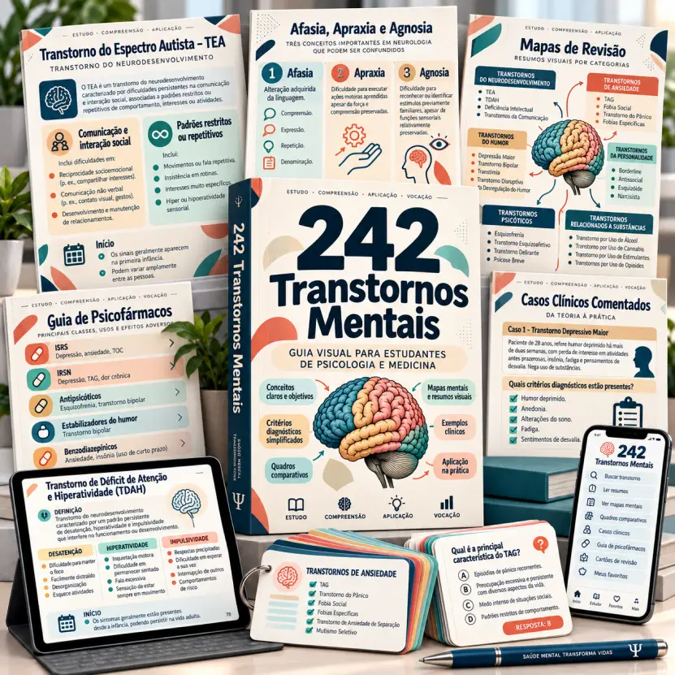
Não é um livro cheio de páginas intermináveis. É um material visual criado para ajudar você a encontrar rapidamente as informações mais importantes de cada tema, comparar conceitos e organizar melhor seus estudos.
Cada conteúdo apresenta as informações de forma clara, esquematizada e fácil de consultar.
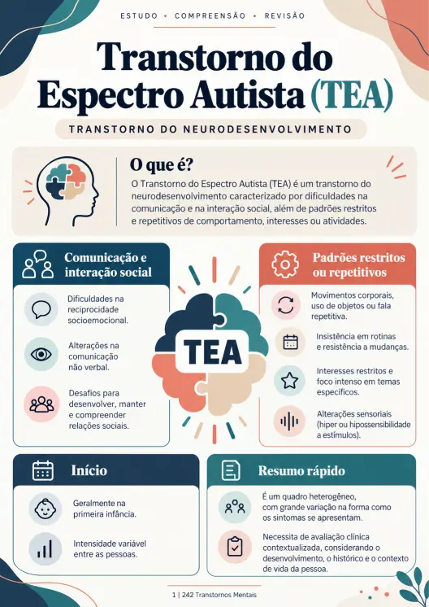
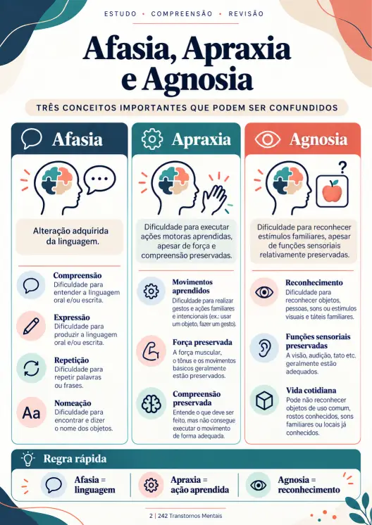
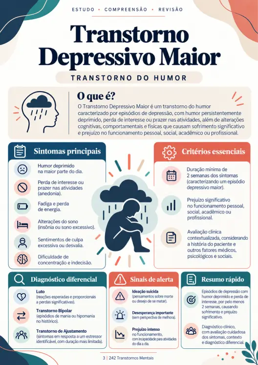
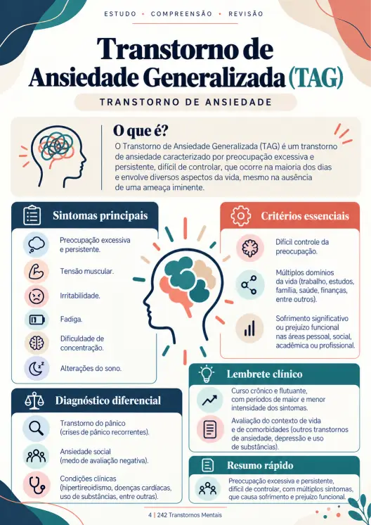
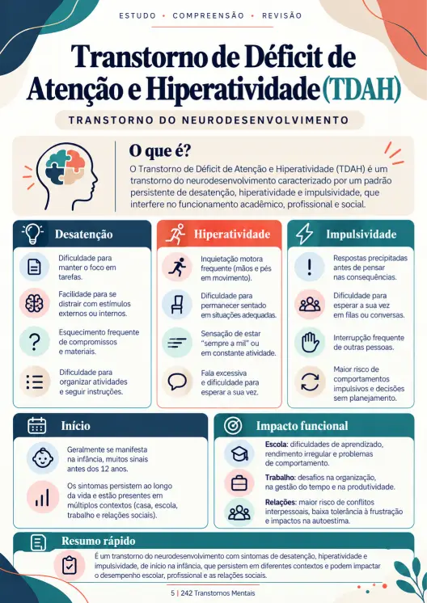
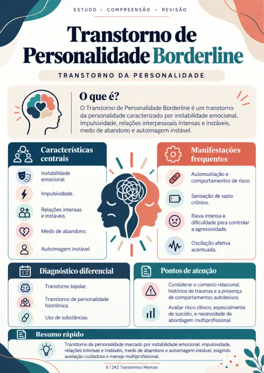
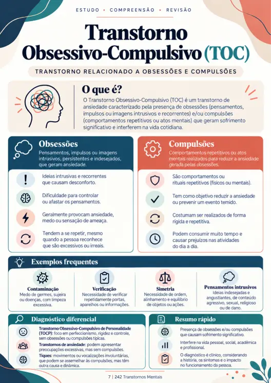
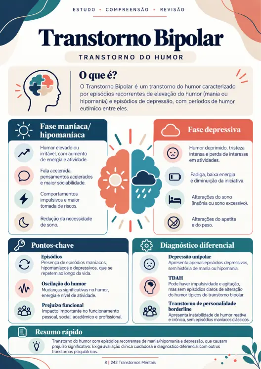
242 conteúdos visuais
organizados em um só lugar.
Estudar Saúde Mental pode se tornar confuso quando diferentes transtornos apresentam sintomas, características ou conceitos semelhantes.
Por isso, o material foi organizado para ajudar você a compreender cada tema de forma mais estruturada.
Compreenda o que é cada transtorno e quais são suas principais características.
Visualize rapidamente as manifestações e os sinais mais importantes relacionados a cada quadro.
Organize os principais pontos que você precisa lembrar durante seus estudos e revisões.
Compare transtornos e condições que podem apresentar características semelhantes.
Identifique o que distingue um transtorno do outro, sem depender apenas da memorização.
Relacione cada tema com outros conteúdos importantes de Saúde Mental.
Observe como determinados sintomas e conceitos aparecem em situações clínicas utilizadas para estudo.
Revise rapidamente os pontos essenciais de cada tema antes de uma prova, aula ou revisão.
O objetivo do material não é dar a você mais textos para ler. É ajudar a organizar
o que você já precisa estudar.
Visualize diferenças importantes entre quadros que costumam ser confundidos.
Encontre os principais pontos de cada tema sem precisar reler capítulos inteiros.
Transforme informações extensas em esquemas visuais mais fáceis de consultar.
Utilize comparações e casos educativos para compreender melhor cada conteúdo.
Reduza a dependência de anotações, capturas de tela, arquivos e resumos espalhados.
Acesse o material pelo celular, tablet ou computador.
Se você está cursando uma dessas faculdades e Saúde Mental faz parte da sua formação, este material pode ajudar
a organizar e revisar seus estudos.
Utilize o material para revisar transtornos, sintomas, critérios, conceitos e diferenças entre os principais quadros.
Utilize como material complementar para estudar e revisar conteúdos relacionados à Psiquiatria e Saúde Mental.
Materiais complementares criados para ajudar você a comparar, revisar e aplicar melhor os conceitos estudados.
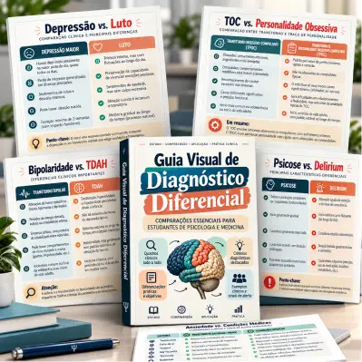
Uma coleção de comparações visuais entre transtornos e condições que podem apresentar características semelhantes.
Ideal para entender quais características diferenciam um quadro do outro.
Valor: R$ 27,90 — GRÁTIS
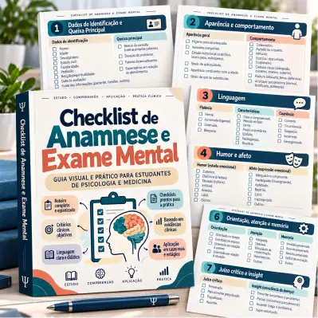
Um guia visual e organizado para estudar os principais componentes da entrevista e do exame do estado mental.
Um material de apoio para estudar a estrutura básica da avaliação em Saúde Mental.
Valor: R$ 19,90 — GRÁTIS
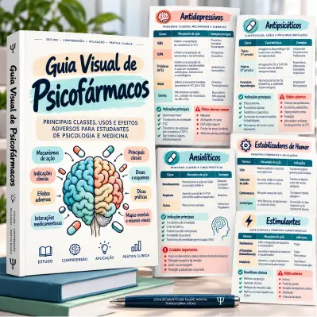
Uma referência acadêmica para organizar as principais classes de medicamentos utilizadas na Psiquiatria.
Tudo organizado visualmente para facilitar o estudo e a revisão.
Valor: R$ 24,90 — GRÁTIS
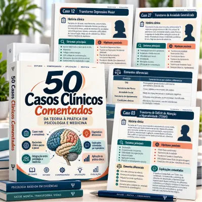
Treine sua interpretação de conceitos por meio de situações clínicas criadas para fins educativos.
Uma forma prática de relacionar os conceitos estudados com situações clínicas.
Valor: R$ 29,90 — GRÁTIS
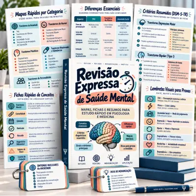
Uma revisão resumida de conceitos, diferenças e pontos essenciais para quando você tem pouco tempo.
Encontre rapidamente os temas que precisa revisar sem consultar todo o material novamente.
Valor: R$ 17,90 — GRÁTIS
HOJE: GRÁTIS
OFERTA DE LANÇAMENTO
Leve os 242 Transtornos Mentais e todos os materiais complementares em um único acesso.
Bônus no valor de R$ 120,50 incluídos gratuitamente!
Valor total: R$ 150,40
HOJE POR APENAS
R$ 19,90
Pagamento único · Sem mensalidades
SIM, QUERO ACESSAR AGORAAcesso digital imediato após a confirmação do pagamento.
Compra segura Acesso digital Garantia de 7 dias
7 DIAS DE GARANTIA
Você tem 7 dias para conhecer o material e verificar se ele atende às suas necessidades de estudo.
Após receber seu acesso, poderá explorar os conteúdos com calma.
Se dentro do prazo de garantia decidir que não deseja continuar com o material, poderá solicitar o reembolso conforme as condições estabelecidas pela plataforma de pagamento.
Sua compra está protegida durante esse período.
O acesso é 100% digital e disponibilizado após a confirmação do pagamento.
O material é totalmente digital. Você não receberá nenhum produto físico pelos Correios.
Sim! Você pode consultar o material pelo celular, tablet ou computador.
Sim! Foi desenvolvido para estudantes dessas áreas que precisam revisar transtornos mentais, sintomas, critérios diagnósticos e conceitos essenciais de Psicopatologia e Psiquiatria.
Não. É um material educativo complementar, criado para facilitar a organização, a compreensão e a revisão dos conteúdos estudados.
Você tem 7 dias para conhecer o material. Se decidir que ele não atende às suas necessidades, poderá solicitar o reembolso dentro desse prazo, conforme as condições da plataforma de pagamento.